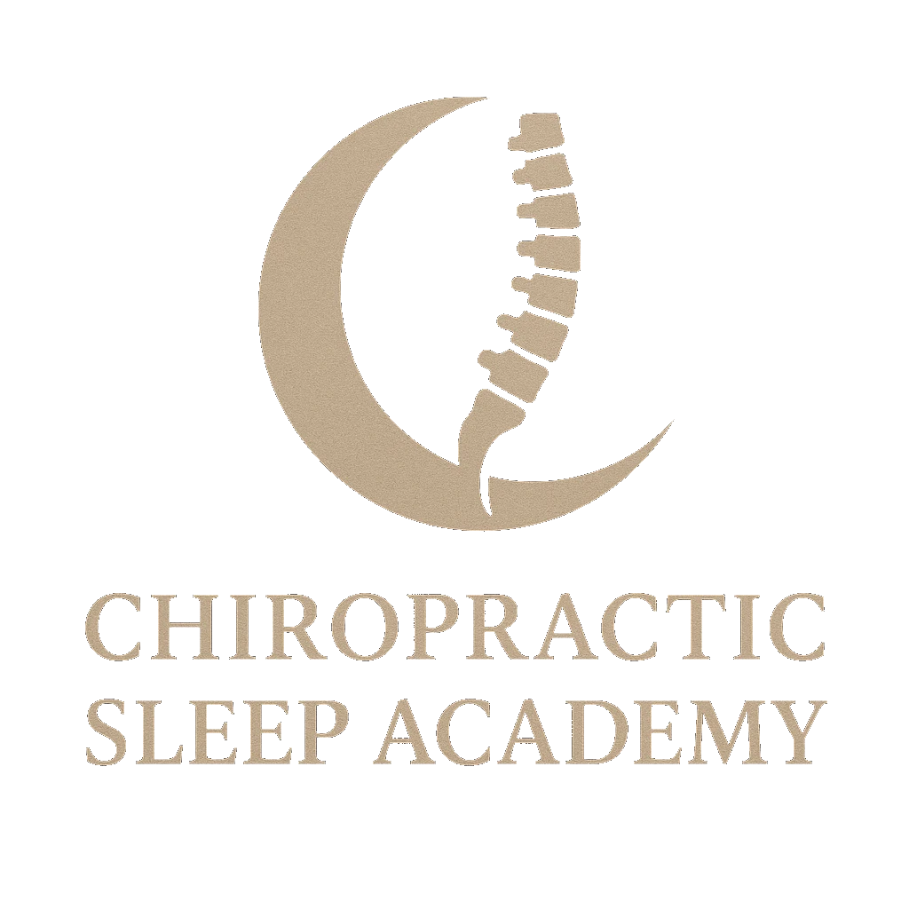

Chiropractic Sleep Academy®
How Dentists Increase Chair-Hour Efficiency in Sleep Apnea Cases
By Working With Doctors of Chiropractic — A Practical Workbook for Dentists
Dr. Robert Zeravica, DC
Chiropractic Sleep Academy®
www.ChiropracticSleepAcademy.net
"You don't have to run the playground. You just need to know where to stand."
Introduction
The Playground
A new kid joins the school playground. The dentist and the Doctor of Chiropractic both want
to help. Someone has to explain the rules.
This workbook explains what the playground is (sleep apnea care), who sets the
rules (biomechanics + scope), and how dentists can help more patients in less
chair time — without turf wars, over-education, or wasted effort.
Part 1
The Opportunity — and the Bottleneck
Sleep apnea patients are entering dental offices more than ever. Dentists are
often the first to open the airway conversation — you screen airway, CBCT
gives visual authority, and the first apnea conversation feels natural in a dental
setting. That's not about ownership; it's about patient acceptance.
But airway cases can quietly eat chair hours:
- appliance titration that stalls,
- intolerance and remakes,
- TMJ complaints after delivery,
- patients who "don't feel better" despite a well-made device,
- documentation and follow-up that pile up.
Most of these aren't device problems — they're global-mechanics problems
the device alone can't solve.
Part 2
Why CBCT and the Appliance Alone Aren't Enough
CBCT shows airway narrowing, jaw position, craniofacial anatomy — a local
view. It does not show spinal-curve load, pelvic imbalance, respiratory mechanics,
postural compensation, or foot–spine relationships.
A narrow airway is a local finding. Sleep apnea is a global condition.
When the global frame isn't addressed, an oral appliance is placed on a body that
may be fighting it — the source of intolerance, relapse, and TMJ strain. The device
isn't wrong; it's unsupported.
Part 3
What the Doctor of Chiropractic Adds
A post-graduate-trained DC evaluates the whole structural frame the airway sits in:
posture / cervical curve (CBP); pelvis & SIJ (SOT/AK); cranial mechanics (BNS/CFR);
spinal loading; foot–pelvis–spine integration. This answers one question that protects
your appliance work:
Will an oral appliance help — or create new problems — without correcting global mechanics?
The DC doesn't touch your scope. You choose and deliver the device; the DC makes
sure the body can accept and hold it.
Where the lanes meet
The TMJ — and the Joint That Finishes It
In the ideal case, the TMJ is the cross-over joint between you and the
Doctor of Chiropractic. Both of your licenses cover it, so it's the natural front
door for working together — the one joint where "everyone in their lane" becomes
"and here's where the lanes meet."
Here's the part most sleep programs miss. In the chiropractic biomechanical
model, the TMJ and the sacroiliac joint (SIJ) behave as a reciprocal pair —
top and bottom of the spine, moving in relationship. In that model, TMJ work
done without addressing the SIJ is incomplete. You work the TMJ; the Doctor of
Chiropractic owns the SIJ (SOT/AK) — the TMJ's paired partner. That's not a
courtesy referral; it's finishing the job at both ends of the same system.
The dentist works the TMJ. The Doctor of Chiropractic finishes it at the SIJ.
A note on coordination (California). Because a California
Doctor of Chiropractic's scope covers the whole skeleton — skull to sacrum to feet —
the DC serves as the case manager of the whole-body sleep case while you run
the oral-appliance part of the play. In California the Doctor of Chiropractic
diagnoses and manages sleep apnea, snoring, and insomnia within full scope,
and brings in an MD or ENT as a peer when a complex case calls for it. This
isn't about rank; it's about who holds the whole-body view. (Scope described
here is California-specific.)
Part 4
The Proper Role of the Oral Appliance
Oral appliances work — they support airway patency and reduce collapse, and
for many patients they're the right tool. Selection is best made as a
co-decision:
- DDS evaluates dental tolerance (occlusion, perio, restorations, TMJ).
- DC evaluates biomechanical consequences (posture, cervical load, cranial/pelvic response).
Both providers trained on the device. The appliance supports the structure — it
doesn't replace it.
- DDS identifies the airway concern.
- DDS refers to the DC for whole-system evaluation.
- DC evaluates biomechanics and reports back.
- DDS + DC select the appliance together.
- DDS delivers the appliance.
- DC reassesses global mechanics post-delivery.
- Adjustments/supports as needed; retest with HST at ~30–60 days.
No turf war. No duplication. No guessing.
Part 6
The Chair-Hour Math
Co-management doesn't add work — it removes the chair hours airway cases
usually cost:
- Fewer remakes and titration stalls — the body is prepped to accept the device.
- Fewer TMJ/intolerance call-backs — cervical and cranial load addressed up front.
- Faster patient acceptance — the patient hears a coordinated, whole-body plan.
- Shared documentation — the DC's findings and re-tests support your chart.
- Better, measurable outcomes — pre/post HST numbers you can both stand behind.
Part 7
Protection — Why This Covers Everyone
- Dentists reduce chair time and, through documented co-management, may
reduce liability exposure. (Have your attorney confirm any liability language.)
- Doctors of Chiropractic diagnose and manage the case within full scope.
- Manufacturers stay in their lane.
- Patients get better outcomes.
The Doctor of Chiropractic diagnoses and manages the case; complex cases are
co-managed with an MD or ENT as peers, by choice. Everyone contributes; the
case gets coordinated.
- Find a CSA-trained DC (or one skilled in CBP/SOT/AK/cranial) near you.
- Agree on the sequence and a simple referral pathway (form + shared summary).
- Pilot 3–5 cases with pre/post HST so you both see the difference.
- Standardize the co-decision checklist for every airway patient.
Appendices
Checklists & Roles
A. Referral snapshot (DDS → DC)
Patient, airway concern, CBCT note, appliance considered, question for the DC
("can the body accept/hold this device?").
B. Co-decision checklist (appliance selection)
- ☐ DDS: occlusion / perio / restorative tolerance
- ☐ DDS: TMJ baseline
- ☐ DC: cervical curve & posture load
- ☐ DC: pelvic / cranial response
- ☐ Joint: device choice + titration plan
- ☐ Plan: HST pre & ~30–60 days post
C. Who does what
| Step | DDS | DC | Physician |
|---|
| Screen / open conversation | ● | ○ | |
| CBCT / dental airway view | ● | | |
| Whole-system biomechanics | | ● | |
| Sleep test — clinical read / diagnosis | | ● | ○ (peer) |
| Appliance choice | ● (co) | ● (co) | |
| Appliance delivery | ● | | |
| Post-delivery reassessment | ○ | ● | |
| Complex-case management | co | ● | co (peer) |
D. Red flags → bring in an MD now
Severe daytime sleepiness with driving risk, witnessed apneas with cardiac
history, oxygen-desaturation concerns — bring in an MD or ENT promptly and co-manage
as peers. Good medicine, not a limit on scope.
Dentists open the door. Doctors of Chiropractic assess the whole house.
Oral appliances support the structure — they don't replace it.